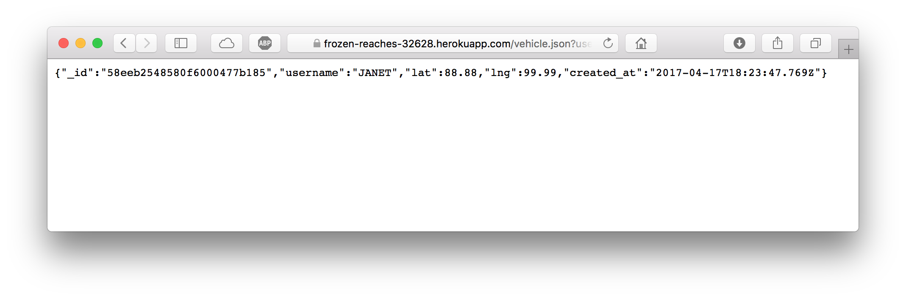
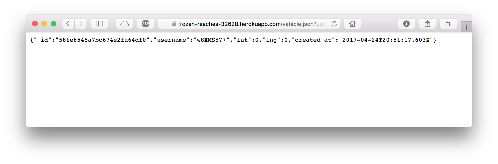
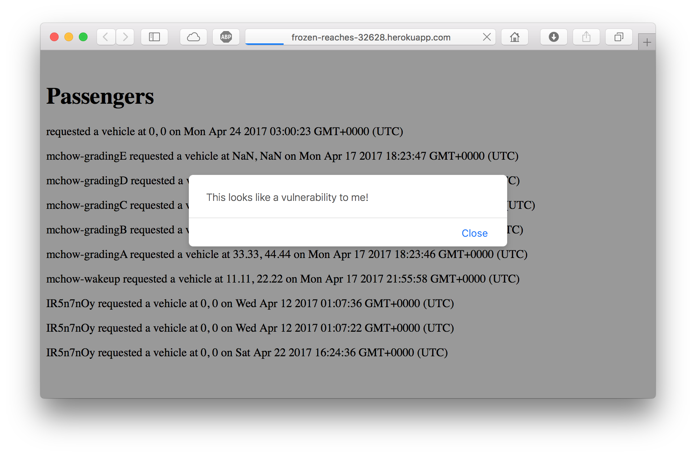

COMP 20 Assignment 4: Security
Sam Cowger
Introduction
The product in question is a black car service. My duty was to probe it for security weaknesses and suggest what could be done to stop them. I was to act as a white hat hacker. I was tasked with finding at least three security/privacy issues in the app, and was given access to both the frontend and backend code for it. Below are my findings.
Methodology
I began by considering the assignment. I knew the specifications, so I was able to immediately consider where certain vulnerabilities might appear. I knew that data sent to the app would have to be displayed in HTML on a web page, so I noted that as a possible weak point and tested it using curl. My findings vis-à-vis this vulnerability are documented in the section on the first vulnerability.
Next, I considered the database aspect of this. If I could cause my own HTML to be rendered, perhaps user input wasn't being properly sanitized throughout the application. Perhaps a MongoDB command could be employed for nefarious purposes. I discovered how to apply MongoDB commands through a web query string, applied what I learned, and found another vulnerability in the app.
I returned to the first issue and considered further the implications. If I could inject HTML, what was to stop me from conducting a full Cross-Site Scripting (XSS) attack? I returned to curl to attempt a further attack and found that the vulnerability in issue 1 could be exploited quite a bit more.
Abstract of Findings
I found that a user with malicious intent could conduct a variety of attacks on this web application. With the knowledge and inclination, someone could cause the app to become almost unusable, and could also cause users of the app to be redirected to a third party website, which could cause behavior entirely different from that of the app.
Issues Found
- HTML insertion (an image, in this example)
Issue:
I was able to cause an image to be displayed on the home page.
Location:
The home page of the web app.
Severity:
Medium. By causing the homepage to display an image of my choice, I've demonstrated the ability to do more. I could have sent a disguised hyperlink to a malicious site, by styling it to look like normal text. I could have caused the image itself to be a link. I could have displayed a violent or pornographic image. I could have caused any sort of page to be displayed, or even caused a page redirect. That page could easily cause a file to be downloaded to a user's computer, which could then be opened, accidentally or on purpose. Users would be powerless to stop this from happening, and I would be able, if not to disable the web app, then to make it practically unusable. I claim this issue to be only medium only due to the vulnerabilities documented in issue 3.
Description of issue:
The issue is sending HTML "code" to the website by causing the application to consider it as a username. Since the front page of the app is set to display all usernames on the home directory in plain HTML, and since the input isn't filtered in any way, the app does the hard work to render whatever HTML I might send to it. I sent the image as HTML in the username field using curl, like so: curl --data "username=<img src=\"https://i.kinja-img.com/gawker-media/image/upload/gipcqovkfqlw3bhuxqjr.jpg\" style=\"display:block;margin:auto;width:80%;\"><br>&lat=0&lng=0" https://frozen-reaches-32628.herokuapp.com/submit
I was able to send the image only after escaping the quotation marks with a backslash. I was also able to include styling for the image.
Proof of vulnerability:
This screen capture is proof that I was able to make an image appear from a different website, in this case Jalopnik, quite definitively a third party.
Recommendations:
Problematic though this issue may be, it can be eliminated by adding rather simple code to the server to remove or replace certain characters in whatever data is sent. In the server, there exist the following lines of code:
var lng = request.body.lng;
var lat = request.body.lat;
var username = request.body.username;
To sanitize user input, add the following lines of code ater where the above lines of code are executed and before the data is inserted into the database collection:
lng = lng.replace(/[^\w\s]/gi, '');
lat = lat.replace(/[^\w\s]/gi, '');
username = username.replace(/[^\w\s]/gi, '');
- MongoDB Database Command Abuse
Issue:
I was able to use a MongoDB command to display the data associated with a vehicle whose information I did not know.
Location:
The /vehicle.json route of the web app.
Severity:
Medium-high. When testing this, I began by researching how to include MongoDB commands as query strings in a URL. When I found the answer, I tested it to find out if this particular application had this particular vulnerability, and it did, though not in a way that would cause exceptional amounts of sensitive data to be displayed. That being said, it did absolutely allow me to see the personal information of drivers about whom I had no reason to know. The reason I don't rate this vulnerability's severity as high is because not all user data is exposed through this vulnerability, as explained below.
Description of issue:
The desired functionality of the application is for a user who has knowledge of a vehicle's username to be able to gather data about that vehicle. This allows for selective sharing of vehicle data without exposing sensitive data to those who shouldn't be able to see it. With this issue, however, we are able to do just that. By visiting the URL https://frozen-reaches-32628.herokuapp.com/vehicle.json?username[$ne]=, one is telling the database not to fetch data for a specific vehicle, but rather to fetch data for any vehicle whose username is not blank.
Having discovered one username (JANET, in this case), one could then visit https://frozen-reaches-32628.herokuapp.com/vehicle.json?username[$ne]=JANET to find another vehicle's data. I can use another MongoDB command, $gt ("greater than") to discover yet another vehicle username, using https://frozen-reaches-32628.herokuapp.com/vehicle.json?username[$gt]=JANET. I was unable to continue to use MongoDB commands to access more vehicle usernames.
Proof of vulnerability:
This was the result of visiting https://frozen-reaches-32628.herokuapp.com/vehicle.json?username[$ne]= in a web browser:

I then used the username JANET in the query string to get another vehicle's information, with https://frozen-reaches-32628.herokuapp.com/vehicle.json?username[$ne]=JANET:
Substituting $gt for $ne, i.e. https://frozen-reaches-32628.herokuapp.com/vehicle.json?username[$gt]=JANET, resulted in a third vehicle username:

Recommendations:
The task of sanitizing user input here is as easy as it is above. This code appears in the server:
var name = request.query.username;
Similar to the above process, sanitization is as simple as adding this after the above code:
name = name.replace(/[^\w\s]/gi, '');
- JavaScript injection via curl (a Cross-Site Scripting vulnerability)
Issue:
I was able to cause the home page of the application to execute JavaScript code of my own, through a Cross-Site Scripting attack.
Location:
The home page of the web app.
Severity:
High. I (or a malicious actor) can easily send JavaScript to this site and have it injected directly into the HTML, as the domain https://frozen-reaches-32628.herokuapp.com/ is set to display every passenger in the database (their username, their latitude, their longitude, and when they requested the vehicle). In addition, if script tags are allowed, then there is little limit to what could be accomplished; the website could be almost entirely hijacked.
Description of issue:
The issue here is JS code being injected directly into HTML, as mentioned above. Doing this is accomplished through "hijacking" one of the features of the application, the ability to send data to it in the form of a username. Sending said data is easy when using curl, like in issue 1, with a command like this:
curl --data "username=<script>alert(\"This looks like a vulnerability to me!\");</script>&lat=0&lng=0" https://frozen-reaches-32628.herokuapp.com/submit
As in issue 1, I had to escape the quotation marks with a backslash to negate MongoDB's data parser.
Proof of vulnerability:
Here is a screenshot of the alert I was able to cause to appear via the above JavaScript command:

Recommendations:
The solution to this is identical to that of issue 1, simply removing characters that could cause problems:
lng = lng.replace(/[^\w\s]/gi, '');
lat = lat.replace(/[^\w\s]/gi, '');
username = username.replace(/[^\w\s]/gi, '');
Conclusion
The vulnerabilities that I have found exploit the fact that the server does not filter user input, a grave but in this case easily fixable mistake. I was not able to find more issues because this server is a fairly simple one. There are three directories of the web page, and only two accept data of any sort. It is only these two sources of user input that need to be rectified. The cost to fix any of these issues can be as low as free, if the creator of the server is willing to take the 10 minutes or so necessary to learn the necessary JavaScript syntax to remove or replace characters. It would take a specialist no more than 5 minutes to understand the server and its vulnerabilities and to include the necessary code as I described above.
References
In issue 1 and issue 3, input sanitation code came from a class example, posted on GitHub.
In issue 2, knowledge of how to manipulate query strings to include MongoDB commands came from the Synopsys Software Security blog